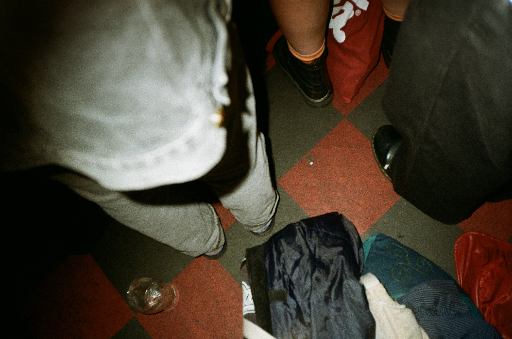

Starting College
I always knew I wanted to be in the creative world, specifically in music, but I had no clear idea of how to turn that into a path. That uncertainty led me to the MMPT course at UL. At first, the scope of it felt overwhelming, and I was uneasy, questioning if it was the right fit. But as I settled into it, everything began to click—it became the exact convergence I was looking for, giving structure to my passion.

Getting into the studio
In second year, my obsession quickly focused on the studio itself. I became fixated on the gear, spending hours doing A/B comparisons between microphones to recording drums, and methodically tracing signal paths to learn the mixing console inside and out. That technical deep dive was my way of grasping the complexitiy of a recording.
Experimenting in the studio
In my third year, I actively sought out opportunities to record bands and friends who had projects in the works. My primary goal was to immerse myself in every stage of the recording process. I began to integrate outboard gear into my workflow and took on the full cycle of production—mixing and mastering each project to the best of my ability.

Final year
My final year was a full-time residency in the electronic music studio, dedicated to my project on the Yamaha DX7 synthesizer. I explored its revolutionary FM synthesis, tracing its impact from 80s pop to modern electronic sounds, and learned how this single instrument redefined music's digital landscape.

Starting in film
I moved to Dublin with a single goal: to break into the film industry. I started from zero, working multiple unpaid roles as a runner and production assistant, shadowing anyone who would let me learn. I spent months absorbing every detail on set, from lighting setups to script supervision, all while balancing other jobs to make ends meet. That relentless effort finally paid off when I earned my first credited role as a sound trainee on the feature film *Going Dutch 2*.

Continuing in film
My goal is to forge a lasting career in the film industry, and I am open to any department—whether in camera, sound, production, or art direction—where I can contribute and grow. I am driven to build a robust professional network through continuous collaboration on diverse projects, aiming to transition from supportive roles into creative leadership and establish myself as a dedicated filmmaker, wherever the path may lead.